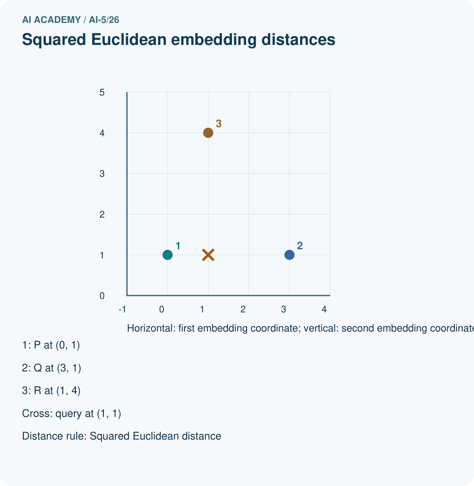
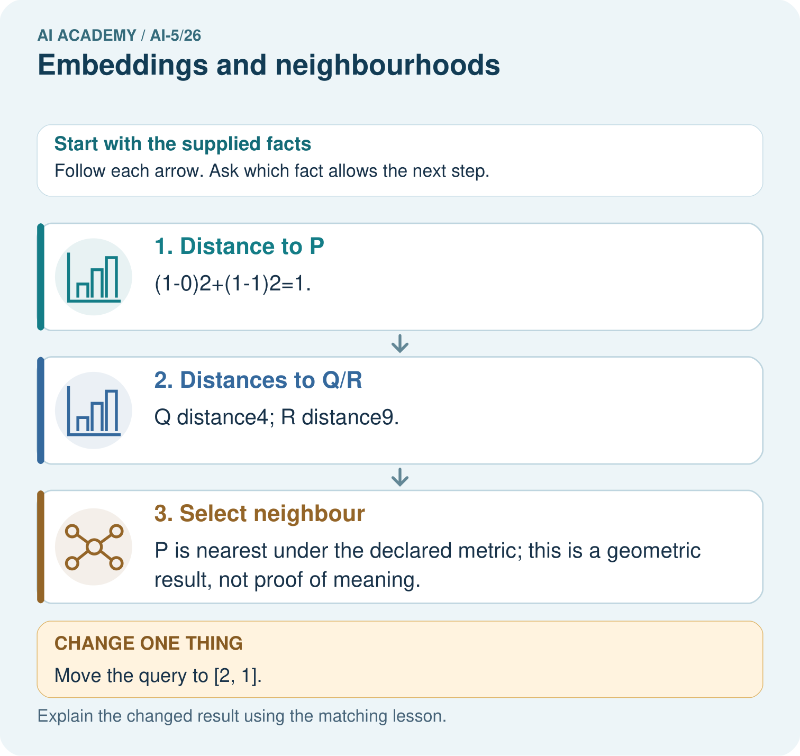

AI Academy · Level 5 · Grade 10 · Week 26 · Student lesson
Embeddings and neighbourhoods
Learn to understand, design, build, test and explain AI systems responsibly.
Project: Image-pattern Network Investigation
Before you start
Why should numerical differences between token IDs not be treated as differences in meaning?
Plan time to read, investigate and explain. Keep predictions separate from observations.
Student lesson · 1 of 17
Your mission
Your learning target
I can look up a vector using a token ID and preserve sequence shape.
I can calculate nearest neighbours with an explicit distance and tie rule.
I can distinguish constructed vectors from learned features and limit similarity claims.
Remember before reading
Close your notes first. A rough first answer helps us choose the right starting point; it is not a score for your ability.
Without opening the old lesson, explain one key idea from Sequence representations. Give an example and a mistake that the idea helps you avoid.
Without opening the old lesson, explain one key idea from Training a small image model. Give an example and a mistake that the idea helps you avoid.
Without opening the old lesson, explain one key idea from Image tensors and channels. Give an example and a mistake that the idea helps you avoid.
After trying, check the relevant lesson or ask your teacher. Change the part of your explanation that the evidence shows was wrong.
This week you will practise:
Look up a vector using a token ID and preserve sequence shape
Calculate nearest neighbours with an explicit distance and tie rule
Distinguish constructed vectors from learned features and limit similarity claims
Retrieve what you already know
Why should numerical differences between token IDs not be treated as differences in meaning?
This week’s end goal
By the end, I can explain embeddings and neighbourhoods using a traced example and a stated limitation.
Student lesson · 2 of 17
Notice the evidence
Continue the fictional robot vocabulary and add WAIT as ID 5. Use the table below, chosen by the lesson author for arithmetic practice. These coordinates are not measured robot properties and were not learned from data. Each token ID selects one row; the resulting two-component vector is its embedding in this example.
| Symbol | ID | Vector |
|---|---|---|
| PAD | 0 | [0, 0] |
| UNK | 1 | [-1, -1] |
| GO | 2 | [2, 0] |
| TURN | 3 | [1, 1] |
| STOP | 4 | [0, 2] |
| WAIT | 5 | [0, 1] |
The table shape is 6 by 2: six vocabulary entries and embedding dimension 2. The ID sequence [2, 4, 0, 0] becomes [[2, 0], [0, 2], [0, 0], [0, 0]], with shape 4 by 2. Its mask remains [1, 1, 0, 0]. The vector dimension is not the sequence length or vocabulary size.
A zero PAD vector does not remove the need for masking. Averaging all four vectors above gives [0.5, 0.5]; averaging only the two real vectors gives [1, 1]. UNK is a real position when it replaces an unknown symbol, so its vector is not automatically excluded.
Student lesson · 3 of 17
See how it works
Use squared Euclidean distance: square each component difference and add. From GO [2, 0] to TURN [1, 1], the distance is (2 - 1) squared + (0 - 1) squared = 2. To STOP it is 8; to WAIT it is 5. TURN is therefore the nearest of those three under this table and metric.
table = [[0, 0], [-1, -1], [2, 0],
[1, 1], [0, 2], [0, 1]]
known = {"GO": 2, "TURN": 3, "STOP": 4, "WAIT": 5}
def distance2(a, b):
if len(a) != len(b) or not a:
raise ValueError("Need equal nonempty dimensions")
return sum((x - y)**2 for x, y in zip(a, b))
def nearest(query, candidates):
if not candidates:
raise ValueError("Need candidates")
scores = {name: distance2(query, vector)
for name, vector in candidates.items()}
best = min(scores.values())
return sorted(name for name, d in scores.items() if d == best)
candidates = {name: table[i] for name, i in known.items()
if name != "GO"}
assert nearest(table[2], candidates) == ["TURN"]The candidate set excludes PAD, UNK and the query token itself. Otherwise a query would normally retrieve itself at distance zero. This code assumes finite numeric components and uses exact ties, appropriate for these integer examples. Floating-point comparisons in other experiments need a declared precision policy.
Connect the picture and the explanation
Point to the input, the deciding step and the result in this week’s visual. Explain the same step in ordinary words. A picture helps when you can say what each part represents.
Student lesson · 4 of 17
Compare the cases
Compare a familiar case with a changed case
For query [1, 0], compute squared distances to GO, TURN, STOP and WAIT in the original table. Return all nearest candidates.
Change one thing in the pictured case
Change: Move the query to [2, 1].
Prediction: Q becomes nearest with squared distance1; P distance4; R distance10.
Reason: Changing the query position changes geometric neighbours while the stored table remains fixed.
Student lesson · 5 of 17
Words that unlock the idea
| Word | Meaning |
|---|---|
| Embedding table | A table assigning a fixed-length numerical vector to each token ID |
| Embedding dimension | The number of components in each embedding vector |
| Neighbourhood | Nearby candidates under a stated representation and distance rule |
| Squared Euclidean distance | The sum of squared component differences between two vectors |
Student lesson · 6 of 17
Follow a worked example
One query can have two closest candidates
Learn from the worked case
Cover the result before checking it. Say what is given, choose the procedure, and follow one step at a time. Then uncover the result and explain your first mismatch. Ask why a step is allowed, not only what number it produces.
A pictorial worked case: Embeddings and neighbourhoods
Measure embedding neighbours without turning numerical proximity into factual certainty.
The facts we will use
Toy tableP=[0, 1], Q=[3, 1], R=[1, 4]; query [1, 1]. Use squared Euclidean distance.
All inputs and outcomes in this worked example are invented classroom data; no real model run is claimed.


Read the picture one step at a time
Why this result follows
An embedding stores each item as an ordered vector. Under squared Euclidean distance, subtract matching coordinates, square their differences and add. The smallest total identifies the nearest supplied vector. These invented coordinates let us check geometry exactly; a claim that neighbours share meaning needs evidence about how the representation was learned and used.
What this example does not establish
Embedding geometry depends on training, metric and scale; proximity does not prove truth, causation or source permission.
Read the labelled picture: What would justify claiming nearby vectors mean related topics? Point to the relevant step in the picture, then write the changed result and the rule or evidence that supports it.
Change one thing: Move the query to [2, 1]. Predict the result before checking the explanation. What remains the same?
Student lesson · 7 of 17
Find and repair a mistake
An embedding table can be trainable: an optimisation procedure adjusts its entries to reduce a declared objective. To isolate one update, let the GO row e start at [2, 0] and use the classroom loss J(e) = (e1 - 0) squared + (e2 - 2) squared. The target vector [0, 2] is chosen for this arithmetic demonstration, not discovered evidence about the word GO.
The gradient at the start is [4, -4]. With learning rate 0.25, subtract the step to obtain e = [1, 1]. Loss decreases from 8 to 2. Keep every other table row frozen in this isolated example. GO now has the same vector as TURN, so a downstream rule receiving only this vector cannot distinguish those two tokens.
This update proves only that the declared objective decreased. It does not prove that the new neighbourhood reflects useful meaning. Learned neighbourhoods depend on the training data, objective and model. A nearby token need not be a safe substitute, have the same label, or be interchangeable in a sentence or command.
Locate the earliest unsupported step
For the isolated GO-row update, give the gradient, updated vector, starting loss and new loss. Which other token now shares the vector?
Student lesson · 8 of 17
Practise together
Using the original table, embed TURN WAIT STOP with one right-padding slot. Give the vector sequence, mask and shape.
Practise with less help: Calculate distances and a tie
Use workbook W2 for the connected example “Embeddings and neighbourhoods”. First fill the input and rule boxes. Try the middle steps before asking for a hint. After a hint, try the next step yourself.
| Plan | Do | Check |
|---|---|---|
| What is given? Which rule or procedure applies? | Record each intermediate step. | Does the result follow? What remains unknown? |
Explain your trace to a partner. Your partner points to one step to check. Swap roles on the next case. Each person writes their own explanation.
Check your reasoning
Use the worked case for Embeddings and neighbourhoods. Proposed explanation: “Token ID differences define embedding distances”. Decide whether this explanation is supported. Point to the step or supplied fact that decides; explain your repair if needed.
Answer on your own before discussion. If you are unsure, say which step you need help with.
Explain the picture
What would justify claiming nearby vectors mean related topics? Point to the relevant step in the picture, then write the changed result and the rule or evidence that supports it.
This is supported practice. Keep the separately named independent case for an attempt before feedback.
Student lesson · 9 of 17
Run the investigation
Predict, investigate and preserve the evidence
For query [1, 0], compute squared distances to GO, TURN, STOP and WAIT in the original table. Return all nearest candidates.
table = [[0, 0], [-1, -1], [2, 0],
[1, 1], [0, 2], [0, 1]]
known = {"GO": 2, "TURN": 3, "STOP": 4, "WAIT": 5}
def distance2(a, b):
if len(a) != len(b) or not a:
raise ValueError("Need equal nonempty dimensions")
return sum((x - y)**2 for x, y in zip(a, b))
def nearest(query, candidates):
if not candidates:
raise ValueError("Need candidates")
scores = {name: distance2(query, vector)
for name, vector in candidates.items()}
best = min(scores.values())
return sorted(name for name, d in scores.items() if d == best)
candidates = {name: table[i] for name, i in known.items()
if name != "GO"}
assert nearest(table[2], candidates) == ["TURN"]| Record | Your evidence |
|---|---|
| Given input and fixed rule | |
| Prediction before checking | |
| Actual result, or “not run” | |
| First mismatch and one explanation | |
| Boundary or missing input and expected response |
On paper, trace the supplied procedure. If code is provided, predict before running it in a local practice file. Never write an expected answer as though it were an observed run.
Plan → try → check
Before trying: what do I expect, and why? While trying: which step could first go wrong? Afterwards: what did I actually observe, and what should change? Keep “not run” if you only traced the procedure.
Student lesson · 10 of 17
Build your understanding
Explain → apply → challenge
Using the original table, embed TURN WAIT STOP with one right-padding slot. Give the vector sequence, mask and shape.
For the isolated GO-row update, give the gradient, updated vector, starting loss and new loss. Which other token now shares the vector?
A developer swaps the IDs of GO and STOP but leaves the embedding rows unchanged. What goes wrong, and what must be saved or changed together?
Student lesson · 11 of 17
Connect your project
Add a labelled embeddings and neighbourhoods evidence sheet to Image-pattern Network Investigation. Show how you can look up a vector using a token id and preserve sequence shape. Use the supplied fictional case and keep its inputs, intermediate steps, calculation or prediction, and limitation. Connect this record to last week’s record; a matching answer without a trace is insufficient.
| Project evidence | Record |
|---|---|
| Component and version | |
| Inputs permitted at prediction time | |
| Trace and comparison with earlier work | |
| Failure, limit and human review |
Evidence for your project
For your Image-pattern Network Investigation, save the input, procedure, observed result and limitation of this check. Label this worked example as practice; use a different, previously unreviewed case when checking independent understanding.
Student lesson · 12 of 17
Show what you know
In the original table, the masked average for GO STOP is [1, 1], and STOP GO has the same average. It also equals the single TURN vector. Averaging discarded order and can collide across different sequence lengths unless additional information is retained. Keeping the sequence of vectors makes order available; a later model must still use it.
Save the vocabulary-to-row mapping, table version, mask convention, distance rule and candidate policy with the model. Compare embedding choices using training and validation discipline, and keep final evaluation reserved. Next week examines how normalisation and similarity measures can change neighbour rankings.
A developer swaps the IDs of GO and STOP but leaves the embedding rows unchanged. What goes wrong, and what must be saved or changed together?
Student lesson · 13 of 17
Study a complete case
Complete evidence record
One query can have two closest candidates
Follow the input through the stated procedure to its result. Cover the result first, predict it, then explain every intermediate step. The text/table accompanies the figure so the example can be read without colour.
Student lesson · 14 of 17
Try a new case independently
Independent case: Find a neighbourhood independently
A separate table contains A [0, 0], B [2, 0] and C [1, 2]. For query [1, 0], give all squared distances and every nearest candidate. Then calculate the mean of A and B and compare it with the query. Can that mean identify which ordered pair produced it?
Attempt this case before feedback. Record any help. Earlier examples below are further practice; a case already practised with feedback cannot establish fresh transfer.
Attempt this without hints
A separate table contains A [0, 0], B [2, 0] and C [1, 2]. For query [1, 0], give all squared distances and every nearest candidate. Then calculate the mean of A and B and compare it with the query. Can that mean identify which ordered pair produced it?
Record support used: none, hint or teacher explanation. After feedback, a different case is needed to demonstrate independence.
Use feedback to improve
Attempt the independent case before hints. Record whether you worked alone, used a hint or followed a model. After feedback, fix the first unsupported step and explain why it changed. A later check uses a changed case, not a copied answer.
Student lesson · 15 of 17
Your lesson route
Start with this question: Measure embedding neighbours without turning numerical proximity into factual certainty.
| By the end, I can | How I will show it |
|---|---|
| Look up a vector using a token ID and preserve sequence shape | Explain the deciding step, show a trace or test, and state one limit. |
| Calculate nearest neighbours with an explicit distance and tie rule | Explain the deciding step, show a trace or test, and state one limit. |
| Distinguish constructed vectors from learned features and limit similarity claims | Explain the deciding step, show a trace or test, and state one limit. |
Remember → watch and explain → try with help → investigate → try independently → keep project evidence. Your teacher may spread this lesson across several classes.
Keep your first prediction. Compare it with what the evidence shows and explain any change.
Student lesson · 16 of 17
Finish and return
Close your notes. Explain this goal in your own words: Look up a vector using a token ID and preserve sequence shape
If you are unsure, return to the worked picture and explain one arrow. If you are ready, change an input or assumption and justify your prediction.
Save your workbook evidence. At the next review, try a different case before opening your old answer.
Student lesson · 17 of 17
Supported practice, repair and portfolio
Use this supported practice once, in the browser or on paper. Keep the reserved independent assessment for a separate first attempt before teacher feedback.
Measure embedding neighbours without turning numerical proximity into factual certainty.
Practice 1: explain the deciding evidence
Which labelled step matches this detail? P is nearest under the declared metric; this is a geometric result, not proof of meaning.
1. Distance to P
2. Select neighbour
3. Distances to Q/R
Hint if needed: Read the steps in the pictorial case. Match the supplied detail to the stage that performs or records it.
After your attempt, compare with the supported explanation: Select neighbour P is nearest under the declared metric; this is a geometric result, not proof of meaning. An embedding stores each item as an ordered vector. Under squared Euclidean distance, subtract matching coordinates, square their differences and add. The smallest total identifies the nearest supplied vector. These invented coordinates let us check geometry exactly; a claim that neighbours share meaning needs evidence about how the representation was learned and used.
Practice 2: explain the deciding evidence
Changed-case practice: Move the query to [2, 1]. Which conclusion is supported by the supplied facts?
1. We can decide the result without examining the changed input or the procedure.
2. This one example guarantees correct results for every future input.
3. Q becomes nearest with squared distance1; P distance4; R distance10.
Hint if needed: Use the changed condition and the deciding step in the pictorial trace. The answer must say what follows from those facts.
After your attempt, compare with the supported explanation: Q becomes nearest with squared distance1; P distance4; R distance10. Changing the query position changes geometric neighbours while the stored table remains fixed.
Repair a missing building block
Review Sequence representations (ai-5/25). Goal: Encode an ordered sequence with an explicit vocabulary. Short practice: Which record lets the program distinguish the first and last zeros? Point to the relevant step in the picture, then write the changed result and the rule or evidence that supports it.. Return to this week and explain what you changed.
Review Training a small image model (ai-5/23). Goal: Trace a complete image model with fixed features and one trained weight. Short practice: Does lower training loss alone establish that four updates generalise better? Point to the relevant step in the picture, then write the changed result and the rule or evidence that supports it.. Return to this week and explain what you changed.
Review Image tensors and channels (ai-5/20). Goal: Read a pixel using declared row column and channel axes. Short practice: Where is the bottom green pixel in the first batched image? Point to the relevant step in the picture, then write the changed result and the rule or evidence that supports it.. Return to this week and explain what you changed.
Predict, run and debug
The browser lab lets you edit the supported Python examples already included in this lesson. Predict first, run, inspect the actual output or error, change one input, then run again. Keep code, predictions, actual results and a reasoned revision together. On paper, label your result as a trace rather than an execution.
Keep your completed work
Use Download completed work in the hosted lesson to export your answers, reflections, practice feedback and code-run evidence. Open the HTML copy to read or print it. Drafts stay in this browser when storage is available; clear drafts on a shared device.